Wedding flow
Music that supports the full arc of the day, from guest arrival and dinner through the late-night peak.
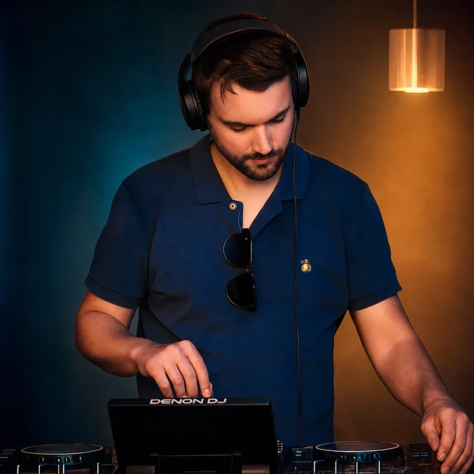
Serving the DMV region
Wedding and private event DJ creating bespoke sets that fit the venue, guest mix, and energy of the night.
The Sound
Music that supports the full arc of the day, from guest arrival and dinner through the late-night peak.
Songs are mixed with timing and restraint so the energy moves naturally from cocktails to dinner to the dance floor.
Current hits, throwbacks, Latin favorites, dance classics, and personal must-plays can live in one smooth set.
Gallery
DJ Juan is a Silver Spring based wedding and private event DJ serving Maryland, Washington DC, and Northern Virginia. His sets blend open-format song selection, Latin and pop fluency, and a calm technical approach that adapts to each venue and crowd.
DJ Juan supports ceremony audio, cocktail hour, reception sound, lighting, bilingual MC moments, and private-event production. He also produces and performs original music, including The 2080s live performance concept.
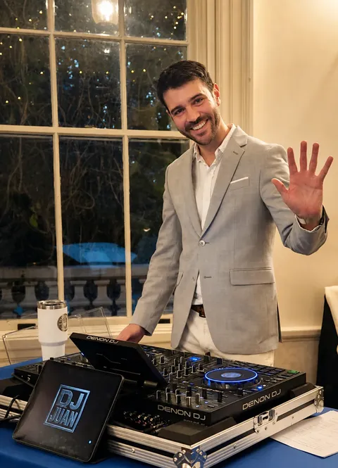
Weddings, cocktail hours, receptions, milestone parties, corporate/private events, and indoor celebrations across the DMV.
Open-format sets across current hits, throwbacks, Latin favorites, dance classics, pop, alternative, and client must-plays.
Professional DJ controller, live sound, microphones, lighting, Stream Deck/OBS workflows, and flexible event setup.
Headlined AI Unlocked Festival 2025 with The 2080s, integrating live DJ performance, vocals, and AI-generated visuals.
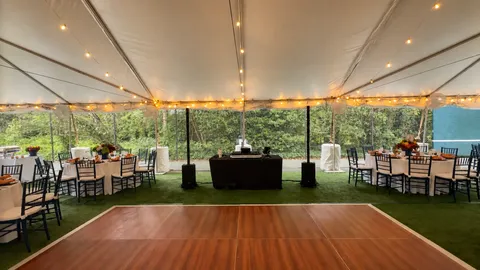
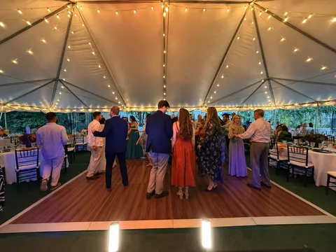
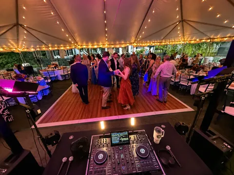
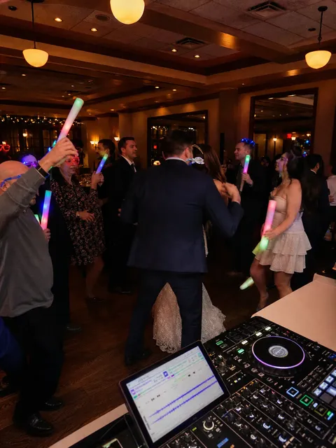
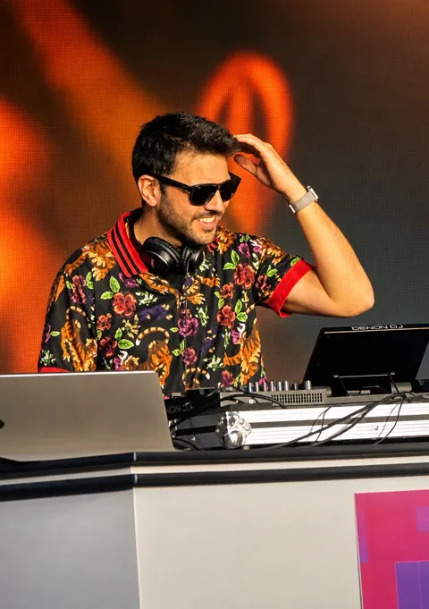
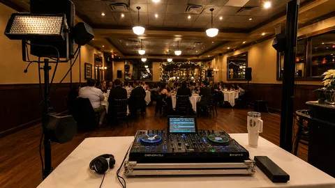
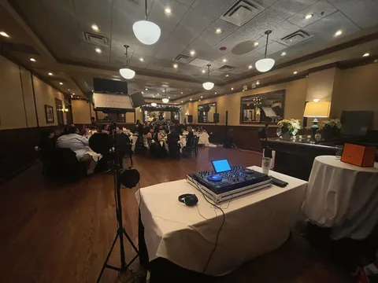
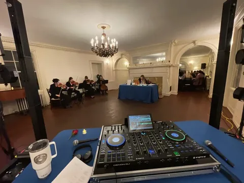
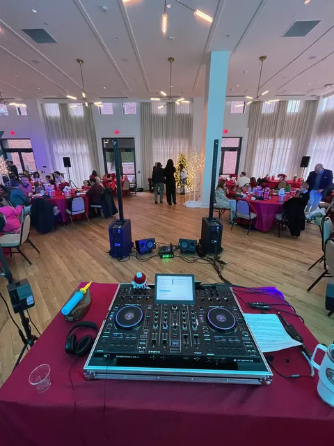
Where DJ Juan Fits
DJ Juan builds the event around the room: the venue layout, guest profile, timeline, and musical priorities. The result is a tailored set that feels specific to the event, not a generic playlist.
Testimonials
Juan read the room from dinner through the last song and kept the transitions clean all night.
The setup was professional, the sound was balanced, and the music felt tailored to our guests.
Calm communication, reliable timing, and a dance floor that stayed active without forcing the moment.
Booking